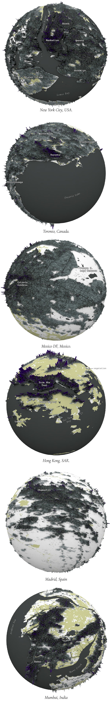

March 2025
The Cityverse
Like soap bubbles, the cities we live in are like micro-universes,
self-contained units that somehow gather everything they need to function. I love how each
of these mini-universes has its own identity. Every place I've been to has something unique,
a particular way of doing things so to speak.
For this reason, I was thinking about
visualizing different cities, some because I have them tattooed on my soul, others because
they seem curious to me and they contrast with each other. To do this I have used data from
Copernicus Global
Human Settlement Layer (GHSL) and Sentinel's Land
use classification.Below you can see my hometown in its micro universe.
The brown
markings are buildings in the central valley. The darker the markings, the taller the
buildings according to the GHSL classification.
This particular city seems to have a lot of empty space, but the wide mountain ranges on
the sides have shaped the city's expansion into this curious pattern, but there are also
other things that make it unique, such as the amount of vegetation around it. See what
the same place looks like by adding a layer of vegetation from Sentiel land use.

Following the same principle, I have applied the same process to create bubbles of a
dozen cities. All with their own notable characteristics. Look below and think about the
conclusions you can get from these spheres. For example, look at how little green area
there is, with a few exceptions. Note that all the spheres you see here are at the
same scale of about 80 km2, same as the first two you already saw
above.
Denser cities, with large built-up areas look a bit darker, in some cases the
water and bare land make for an interesting contrast... all fun to see.

Although it is perhaps a little easier to see the contrast of the extension of the built
areas and the heights of those blocks with a version like the first one you saw at the
beginning of this post.
In my creative processes I always make many versions of the
same thing, regardless of whether it is for my work, or as in this case, just for fun.
Here they are again in that other format.
As I said above, some of these places are quite special for me. I spend many years living
in Hong Kong, the geography of the place is super interesting and the mix of urban and
natural landscapes is just amazing. I think you can see the image in the little
tumbnails above, but I think its worth seeing it a little larger, so, if you are looking
at this entry on a large screen, here you go:
Not a difference if you are reading from a phone screen tho. Sorry... :)
But let's get back to the nerdy stuff.
There's something about renders that fascinates me, creating pieces in general excites
me, but when I see the renders come to life... ugh, I think I'm enjoying this way too
much! Here are some screenshots of what the radiance calculations that Cinema 4D does
when you use Global Illumination look like.
Speaking of processes, I aligned these pieces using QGIS to process the data, then I made
a couple of rasters that I took to Cinema 4D and finally some labels in Adobe
Illustrator. Below you have a render halfway through the process.
Of all the dozens of versions I've made and the 10 gigabytes of data I've used, there are
a couple that I really love because of the patterns they follow. In some cases, the
tallest buildings follow specific streets or financial districts, almost all of them
have something like that, here there are some versions without land-use, just buildings
without anything else.
Or these other sets where the water flows over the city. Cool patterns I think can be
accentuated with a little tweak in color.
Here is a collection of those alternative versions in highg contrast reds and light blue
waters:
So, tell me, is your city here? In total I made about 80 renders for this handful of
cities, maybe in the future I'll try something different with more... who knows where my
obsession will take me.